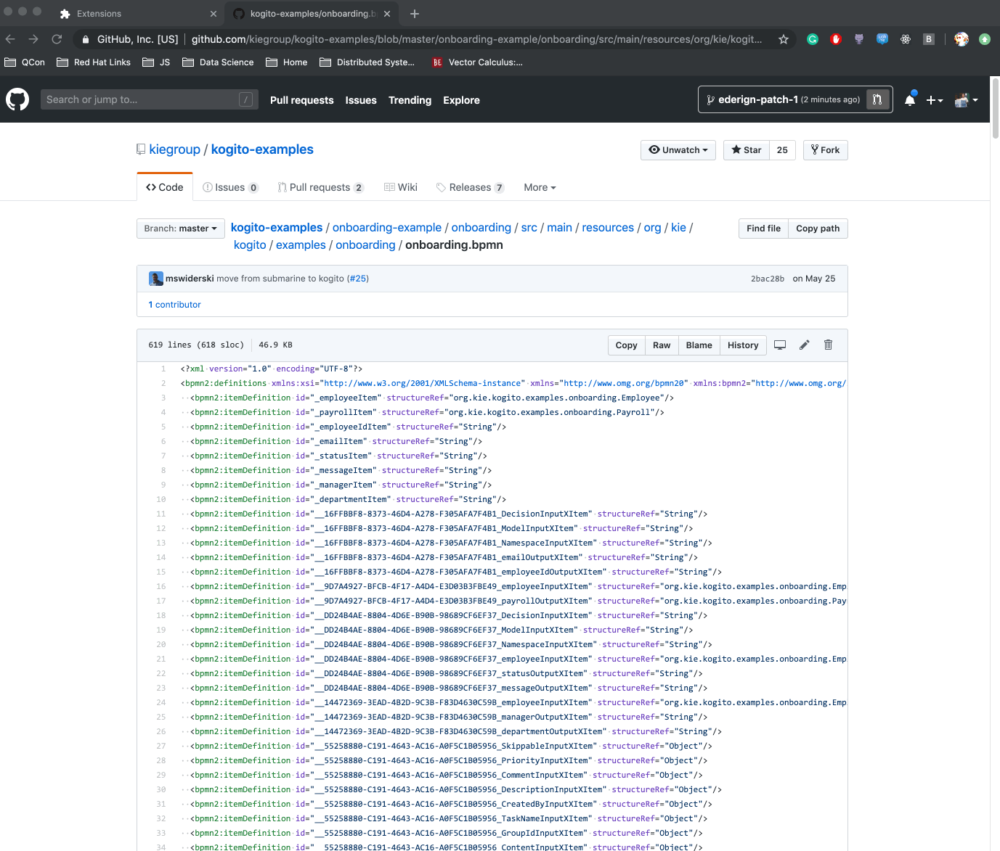
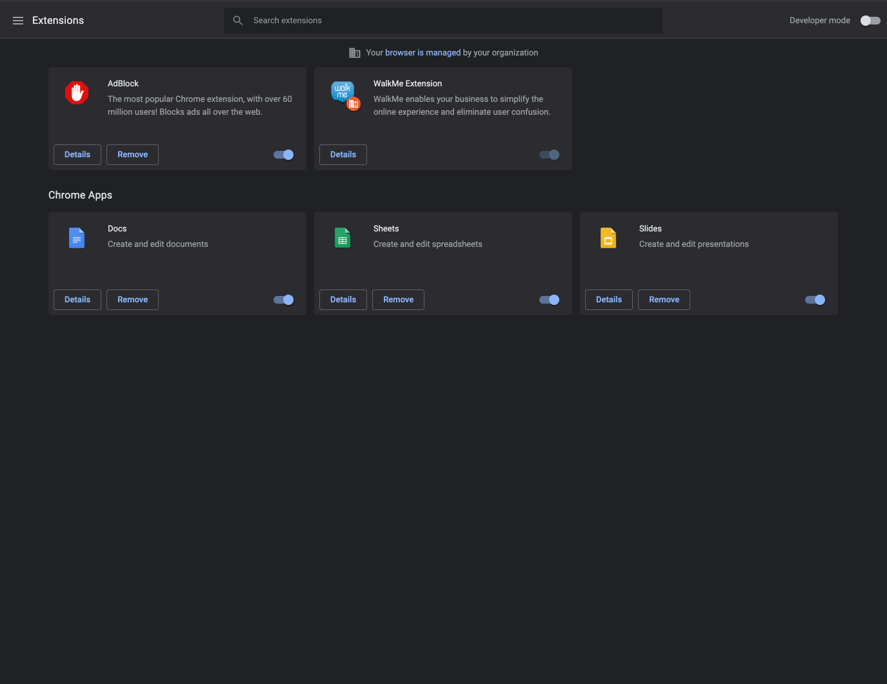
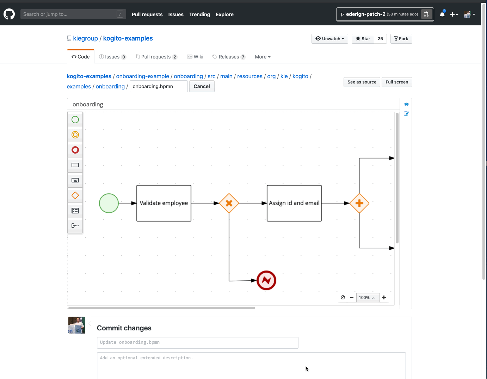

BPMN Chrome Extension Released (alpha)
Are you tired of (impossible) big XML code reviews of BPMN diagrams on GitHub Pull Requests?
We know your pain and that is exactly the reason why we just released a new Chrome Extension that allows visualizing and editing BPMN files directly on GitHub’s interface. 🎉
Before diving on details, let’s take a look at a quick demo of this feature:

Pretty cool isn’t it?
With this chrome extension, our goal is to streamline even more the dev workflow, making Kogito the most developer-friendly business automation platform.
How to set up the extension on Chrome
During this alpha stage, you will have to download the extension from the GitHub releases page and install it manually on Chrome. Soon we will publish this extension on Chrome Web Store, but for now, those are the installation steps:

Features
With the BPMN Github Chrome extension installed, every time that you are editing a BPMN/BPMN2 file, instead of seeing the huge XML file you will be using our BPMN graphical editor. After you modify the file you will be able to commit or send a PR directly from the GitHub interface.
We also provide some advanced features, like full-screen visualization for big diagrams and also you can click on “See as source” to edit the XML manually. You can always go back to the diagram by clicking on “See as diagram”.

What’s Next
We have big plans for our extension, that will include visualizing the BPMN diagram on any repo (not only on editing) and also more integration to PR review mechanism.
Soon we will release a DMN editor extension under the same platform, stay tuned!
Known issues
We are really happy with the results of this alpha release and we want to get the community involved in this as early as possible, that is why we released this with some known issues:
- KOGITO-342 Check why BPMN editor shows error on page closing.
- KOGITO-347 Error logs happening during marshaling
- AF-2167 Native editor key bindings for macOS.
Pull requests, bug reports are more than welcome, this is an ongoing effort of our community!
Take-Aways
As I already said, we are really happy to release this extension. Soon we will provide new editors under this platform! Exciting times ahead!